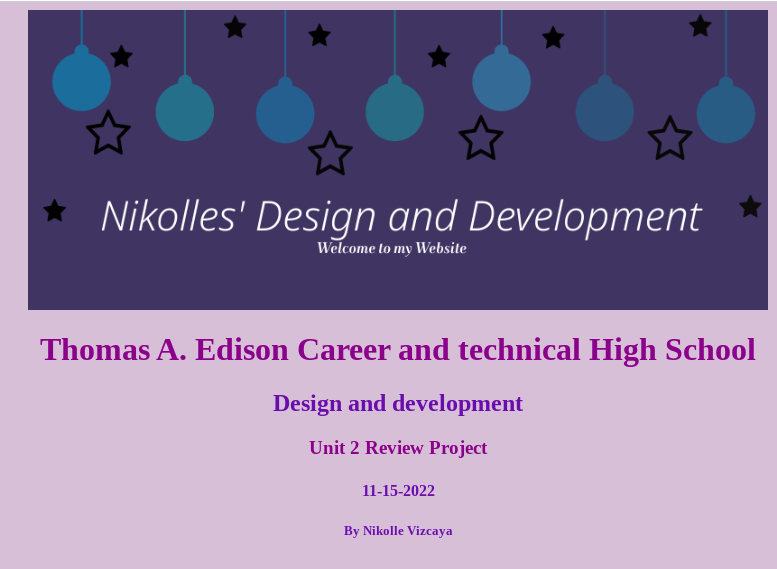

Labs
Labs one through seven
Labs one through seven were an introduction to html and css beginners.
Lab One was basic coding, getting to know how to bold, and different text sizes. Lab two was images, how to insert different types of images into a website and edit them by size, and postition. Lab three was how to code hyperlinks, how to connect a link with an image along with just having a link on the website to take you to another website or page. Lab four was learning how to make a table and adding things inside the table, along with learning hex, and rbg values. Lab five was making a table with unordered and ordered lists inside the table. Lab six was learning how to style your website overall and making favicons for your website logo. Finally, lab seven was grabing all information from labs one through six and making one big website with everything we've learned.This is not my most proud work due to the fact that it was beginners work but it's still part of what I've learned this year.
Lab one |
Lab two |
 Lab three |
Lab four |
Lab five |
Lab six |
Lab seven |
|---|
Click what's underlined to go to each Website!
CSS
Projects using CSS
After learning the basics of html and how to code we started to learn how to code css styling.
For CSS projects we did four different ones. The first project called Make a card, we had to make a card for anything that we decided to make a card for, however the theme was Halloween. In this we learned how to use buttons and color/image styling with css. The second on was a poster,in this we could make any poster that we wanted but we had to style it colorfully, have a title and description in the size of the poster. The third project was making a story comic wise, so a table had to be made and then designing it with images and dialogue. The last project was building a robot and we had to place the images on the face of the robot.
This is not my most proud work since it was a little bit sloppy and not as pretty as other works that I have done.
 Project one |
Project two |
Project three |
Project four |
|---|
Click what's underlined to go to each Website!
Code.org
Code.org Unit Reviews
For every unit in code.org we did a review and talked about what each unit did and the lessons.
In Unit one was a review of css and it was an introduction to digital information, so we learned about how the computer gathers digital data. Unit two was an introduction to the internet and how many different devices are connect to one another. Unit three was how to start designing apps. Here we learned how to design apps and build apps. Unit four we learned what variables, conditionals, and functions were and how w could use those to build apps. Unit five was learning what loops, lists, and traversals are and how the outcome of coding is different when using them. Unit six was algorithms which how computer scientists design algorithms to solve problems and how they analyze the speed of different algorithms. Finally, Unit seven was an introuction to parameters, return, and libraries.
Unit Review four is one of my favorite works since it was different from the ones before. Unit three I liked the app I made along with Unit four, Unit five, and Unit eight in which no website review was made for.
Unit one |
 Unit two |
Unit three |
Unit four |
Unit five |
Unit six |
Unit seven |
|---|
Click what's underlined to go to each Website!
App
Code.org Apps made
In code.org units a lot of apps has had to be made mostly for all of them.
In Unit three it was the first app made, we had to make an app that wasn't bias so I made DesignDiv, a social media app that helps you learn how to design anything you wish to design along with giving you the tools to design yourself if you already know how to. Desiging could be for anything, web design, sketching, chefs, architecture, fashion, and more so DesignDiv was for all of that. In Unit four we had to make an app that had variables, conditionals, and functions, so I made PickYou, an app that could only be used by those older than 13 and that live in the U.S. In Unit five we had a Hackathon project, an app that had loops, lists, and traversals so me and my partner made an app called Kadopt to help adopt cats and gain more information about cats using a dataset. In Unit 8 we had to create an app for the Create Pt, and I made BookLook an app to help people choose what to read.
All of these apps I'm very proud of because it's something I made of from scartch and made them about things I'm intrested in outside of coding.
App one |
App two |
App three |
App four |
|---|
Click what's underlined to go to each Website!
Other
Final Project Ghost School was a project that we did after playing all of the Ghost School Lessons that was just simply a review of the three different level games we made of our own.
Other Projects done
There have been other projects that we've done in class but aren't under any categories.
Final Project Ghost School was a project that we did after playing all of the Ghost School Lessons that was just simply a review of the three different level games we made of our own.
Teacher Appreciation week was a project made for our favorite teacher with images of the teacher along with descriptions of why they're our favorite teacher and a video of us saying something to them.
Congressional App Challenge was a project to make an app or website at the beginning of the year with all the knowledge we had in computer science.
HTML-CSS Review was a project of many differnt units and lessons in one to edit with css or in html, this was done to review for the certification test.
Make a reciepe was a project to just decorate our page how we wished to while making a receipe step by step as easy as possible so that can someone else could make it exactly like it.
Bronze-debug was a poject/ test where there was a lot of errors in a website and we had to debug it and fix it so that it would look correctly on the website.
Project One |
Project Two |
Project Three |
Project Four |
 Project Five |
Project Six |
|---|